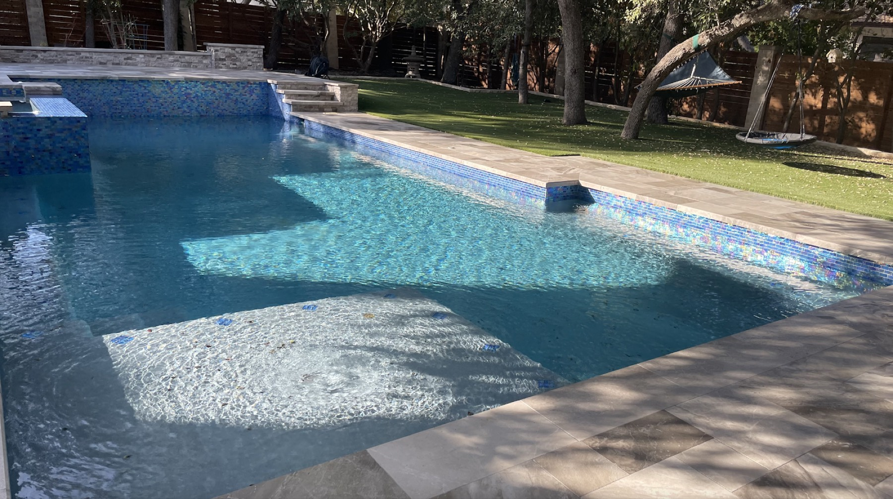
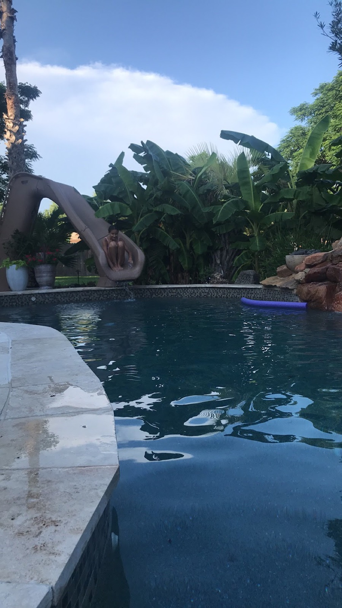
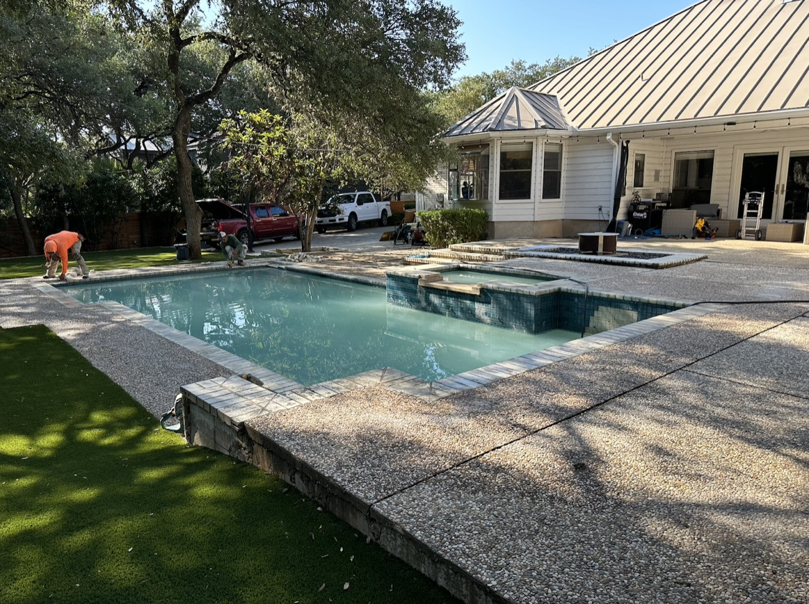
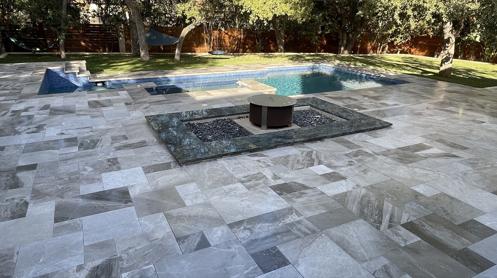
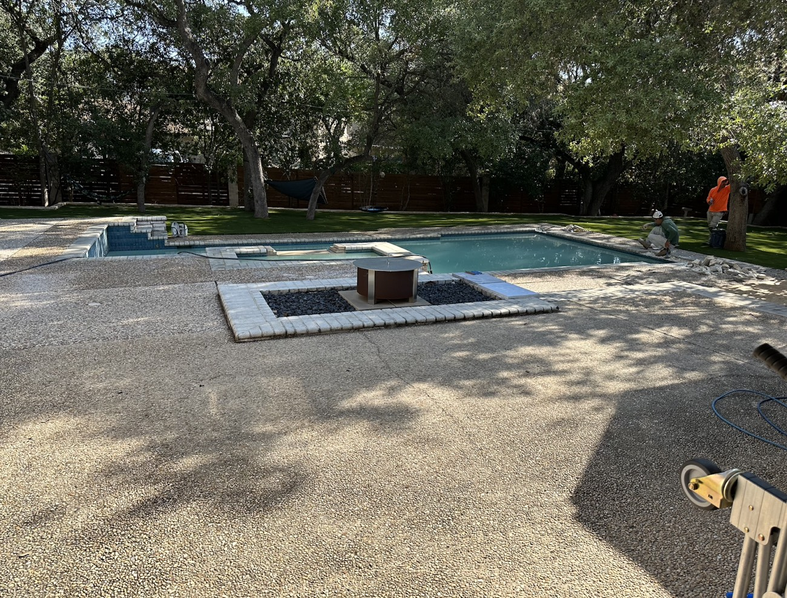
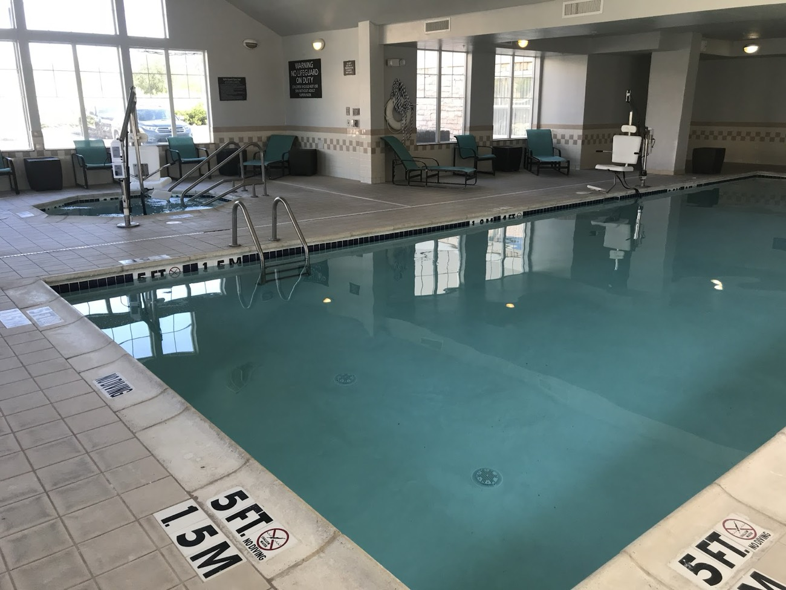
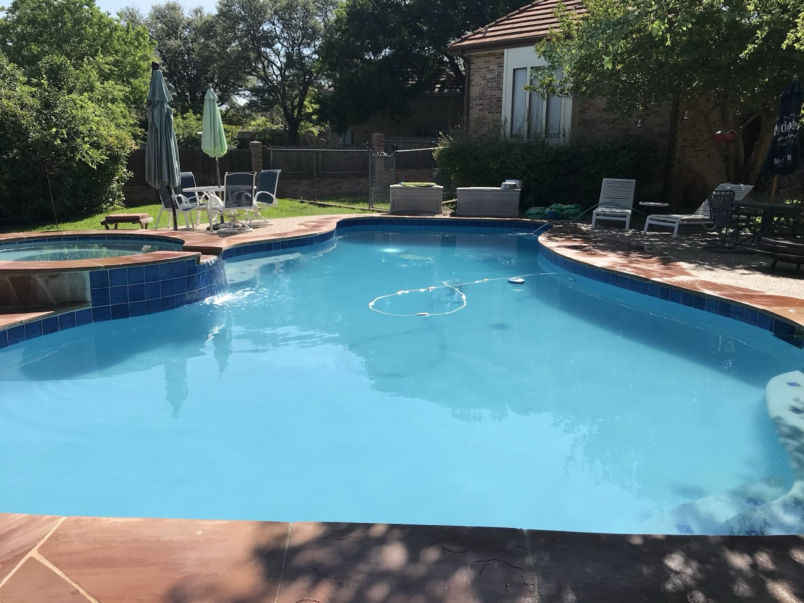
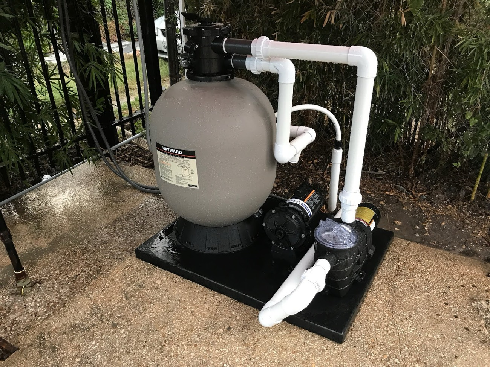

Your pool, handled all year round.
Residential and commercial pool maintenance, equipment repair, and full renovations across San Antonio. A complete solution for your pool — the local crew owners have trusted since 2003.
4.5 · 19 reviews on Google
4.5
Google rating
19
Reviews
Since '03
In San Antonio
Res. & Comm.
Pools served
What we do
Complete pool care, one local crew
From routine maintenance to equipment repairs and full backyard renovations, Four Seasons is a complete solution for residential and commercial pools across San Antonio.
Pool Maintenance
Cleaning, water testing, and chemical balancing for residential and commercial pools — a complete solution that keeps the water clear and swim-ready.
Equipment Repair & Installation
Pumps, filters, and pool systems diagnosed, repaired, and replaced — a wide range of equipment installation and repair solutions so your pool runs the way it should.
Leak Detection
Losing water overnight is unsettling. We locate the leak and restore your pool's function before a small loss turns into a costly one.
Acid Wash
Over time, chemicals and organic buildup can stain or discolor a pool's surface. An acid wash strips the stains and restores the original look and beauty.
Pool Renovations
Decking, fire features, tile, and full remodels — we transform a backyard from ordinary to an oasis. Let us handle your next pool project from start to finish.
Pool Replaster
As a pool ages, its surface wears down and can turn rough underfoot. A replaster brings back a smooth, clean finish — call for a free consultation.
Not sure what your pool needs? Tell us about it and we'll point you the right way.
How it works
Getting started is simple
Three steps from a first call to a pool you don't have to think about.
Step 1
Call or email us
Tell us about your pool and what you need. We'll answer your questions and set up a visit.
Step 2
Get a free estimate
We look at your pool and give you a clear, honest price for the service, repair, or renovation that fits.
Step 3
We take it from here
From a weekly route to a full renovation, we do the work and keep your pool running right — all year round.
Our work
Pools we've built, renovated & maintained
Real San Antonio pools — residential renovations, equipment work, and commercial service.







Trusted in San Antonio
Two decades of pools, kept looking their best
Since 2003, San Antonio homeowners and property managers have relied on Four Seasons for everything from weekly upkeep to ground-up renovations. The rating below reflects the work — not a sales pitch.
4.5 average from 19 reviews on Google
2003
Serving since
Res + Comm
Pools served
6
Core services
Local
San Antonio crew
Get in touch
Let's get your pool taken care of
Serving San Antonio and the surrounding area. Call, text, or email Jeff and the Four Seasons team for your free estimate.
Call or text any time for a free estimate — we'll let you know our next available visit.
Ready for a pool you don't have to think about?
Serving San Antonio since 2003, rated 4.5 on Google. Call or text for your free estimate today.